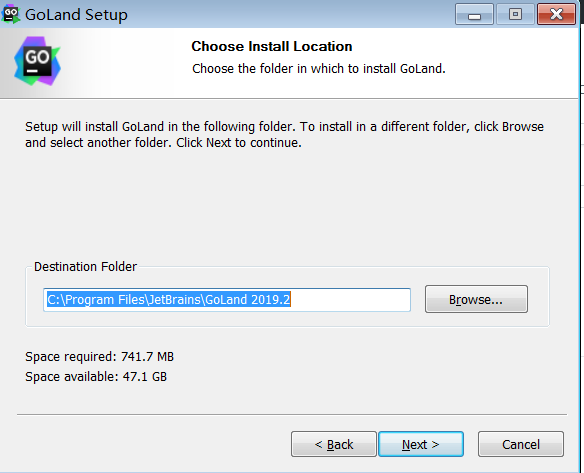
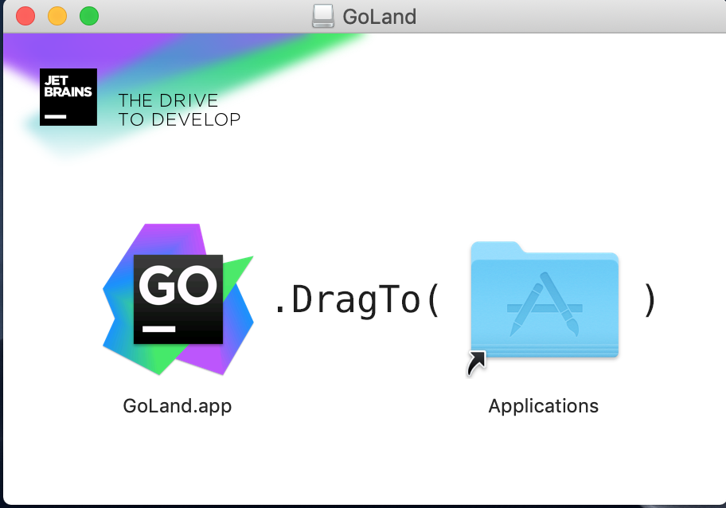
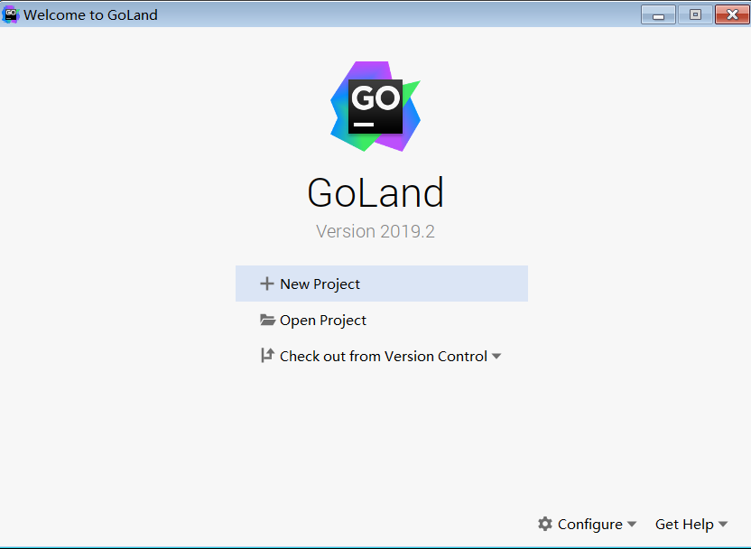
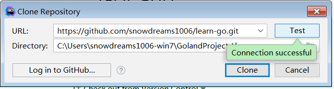
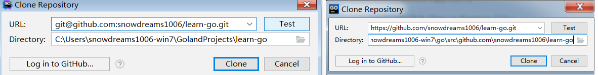
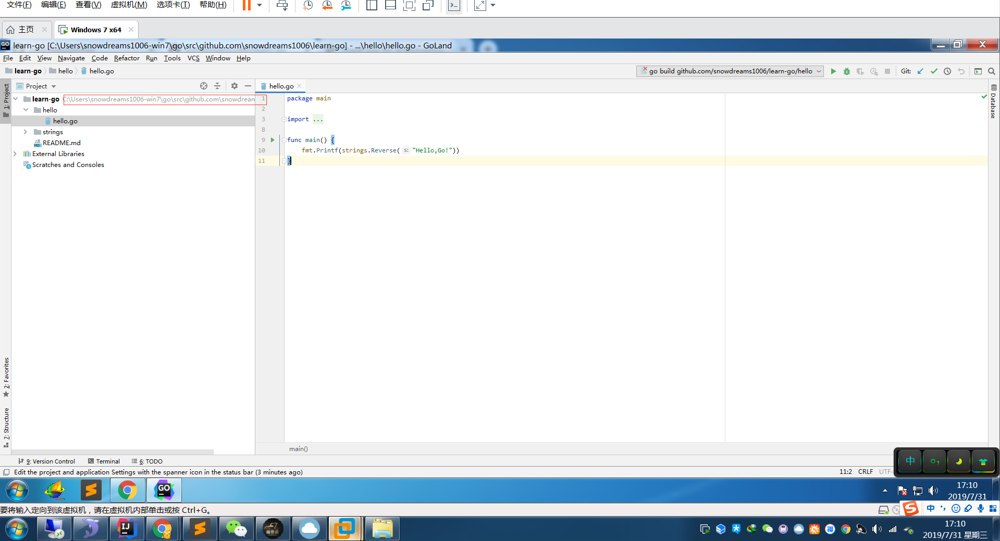
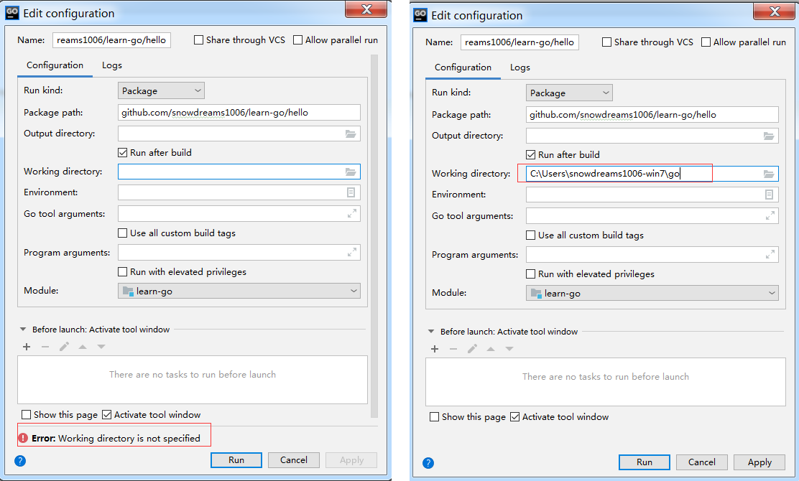
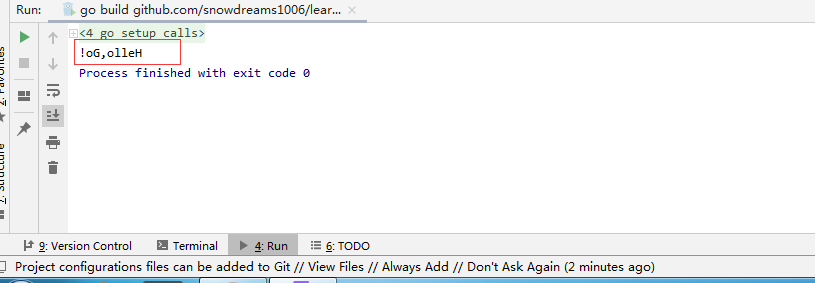
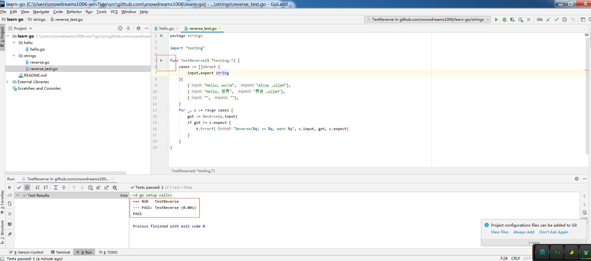

1. IDE编辑器
工欲善其事必先利其器,命令行工具虽然能够在一定程度上满足基本操作的需求,但实际工作中总不能一直使用命令行工具进行编码操作吧?
学习 Go 语言同样如此,为此需要寻找一个强大的 IDE 集成环境帮助我们快速开发,据我所知,市面上比较流行的可能有三个选择:
LiteIDE X:LiteIDE是一款简单,开源,跨平台的Go IDE.GoLand:GoLandis a cross-platform IDE built specially for Go developers.第三方插件:Idea,Sublime Text,VS Code,等常见IDE一般均有Go的插件.
萝卜青菜各有所爱,选择哪个 IDE 都可以,甚至不用任何 IDE 也可以,不过还是推荐下 GoLand 吧!
1.1. Goland 下载安装
官网地址: https://www.jetbrains.com/go/,如果无法访问,可能需要特殊手段绕过.
Goland 并不像 Idea 那样分为专业版和社区版,目前只有收费版,提供 30 天免费试用,试用到期后可以选择购买正版也可以上淘宝购买激活码或网上寻求破解版等等.
直接点击页面中间的 Download 按钮后就会自动识别当前系统进行下载,也可以点击右上角的 Download 按钮自行选择目标平台进行下载.
安装过程比较简单,这里就不再赘述,简单的动图一闪而过看下大致过程吧!
其中安装位置,默认是 C 盘,可以自行选择合适的安装位置.

如果是 Mac 电脑,安装 Goland 更为简单,直接下载拖动到 Application 分类,连安装目录都不用选择,简单演示如下:

1.2. Goland 克隆项目
初次打开 Goland 编辑器,界面出现三个选项:
New Project: 新建项目,适合从零开发新项目Open Project: 打开项目,适合本地已存在Go项目Check out from Version Control: 从版本库中检出项目,适合团队合作时直接从线上项目下载到本地.

三种方式分别对应三种不同的场景,这里选择以第三种方式检出版本库为例,目录源码: https://github.com/snowdreams1006/learn-go
选择 git 版本库,并填写项目地址,然后点击右侧的 Test 按钮,如果提示失败,可能是 Git 基本环境没有配置过,请先配置下 Git,可以参考 git 入门教程

项目地址:
git@github.com:snowdreams1006/learn-go.git或者https://github.com/snowdreams1006/learn-go.git或者https://github.com/snowdreams1006/learn-go
默认情况下,本地目录是 GolandProjects,一定要修改成自己的 GOPATH 目录,即 USERPROFILE/go 目录.

耐心等待,Goland 会自动下载项目相关依赖,右下角的进度条完毕后意味着项目初始化好了,可以正常工作了.
1.3. Goland 打开项目
找到 hello/hello.go 文件,其中 main 方法左侧有个绿色的启动按钮,点击运行.

初始运行,提示配置进行命令配置,设置工作目录为 GOPATH 环境变量所在的目录.

此时配置页面左下角的红色报错消失了,保存后关闭该窗口,再次运行 main 方法,如我们所愿输出了 Hello Go! 的逆序.

现在打开 strings/reverse_test.go 文件,同样点击左侧的启动按钮运行测试文件,证明测试运行正常!

1.4. Goland 配置总结
万事开头难,下载 Goland 并初始化项目,其实很简单,之所以特意写下这篇文章主要是为了克服陌生的恐惧,迈出第一步就会有第二步,接下来的 Go 语言学习之旅就可以顺利开始了,Go to Work !